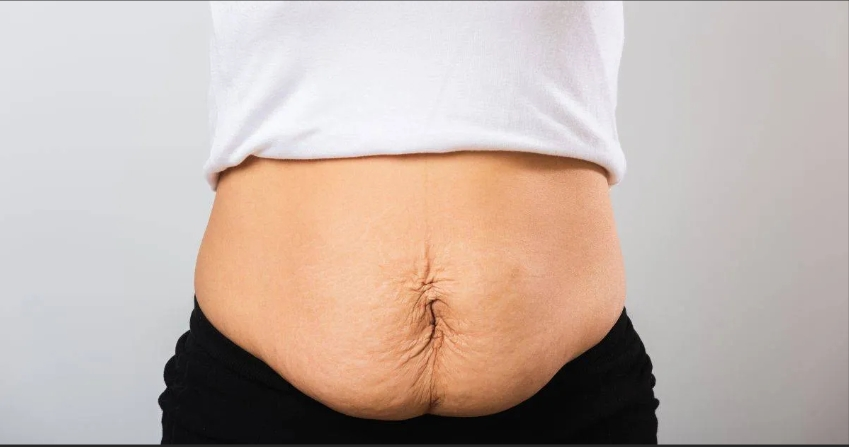

Tummy tuck surgery removes excess skin and tightens abdominal muscles to create a more defined and confident silhouette.
Book ConsultationAbdominoplasty, commonly known as a tummy tuck, removes excess skin and fat from the abdominal area while tightening weakened muscles. This procedure creates a smoother, firmer abdominal profile and is ideal for patients whose contour has not improved with diet or exercise alone.
Achieve a toned, sculpted midsection that enhances your natural body proportions.
Tighten separated abdominal muscles often caused by pregnancy or significant weight changes.
Feel comfortable and confident in clothing, swimwear, and everyday life again.

Targets the lower abdomen with a smaller incision. Suitable for mild skin laxity.
Addresses the entire abdomen with muscle tightening and skin removal.
Includes flanks and sides for more comprehensive body contouring.
Meet with your surgeon to discuss goals, evaluate candidacy, and create a personalized surgical plan.
Receive pre-operative instructions including dietary guidelines and medication adjustments.
The surgery typically takes 2–4 hours under general anesthesia in an accredited surgical facility.
Most patients return to light activities within 2 weeks, with full results visible in 3–6 months.